The attenuation of the Butterworth filter is,
.
The parameter  which determines the maximum variation in passband transmission is,
which determines the maximum variation in passband transmission is,
Thus we have
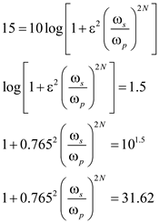
The attenuation of the Butterworth filter is,
.
The parameter which determines the maximum variation in passband transmission is,
Thus we have
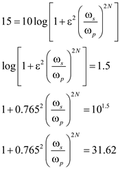
Simplify further.
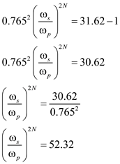
Substitute 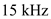 for and 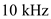 for  in the equation.
in the equation.
Apply logarithm on both sides of the equation.
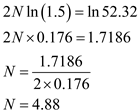
Thus, the order of the Butterworth filter is.
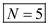.
The natural modes of the filter are spaced by equal angles of 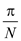.
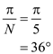
The first mode angle from the  axis is,
axis is,
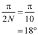
Since, the natural modes all have equal radial distance from the origin, they all have the same frequency.
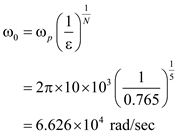
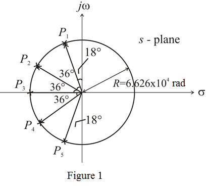
Thus, the natural modes of the Butterworth filter are,
Simplify further.
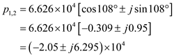
Simplify further.
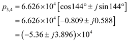
Thus the poles of the Butterworth filter are
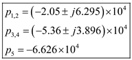
The poles 1 and 2 are,
The poles 3 and 4 are,
The transfer function of the Butterworth filter is,
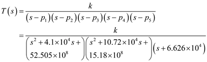
Substitute 0 for  in the transfer function.
in the transfer function.
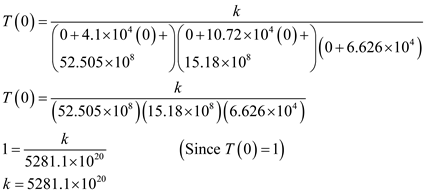
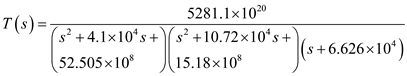
Thus, the transfer function of the Butterworth filter is,
The attenuation at is,
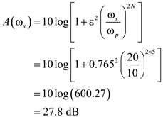
Thus, the attenuation at is, 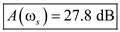.